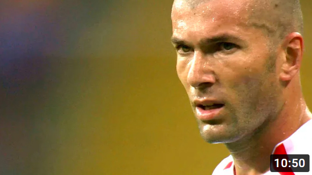
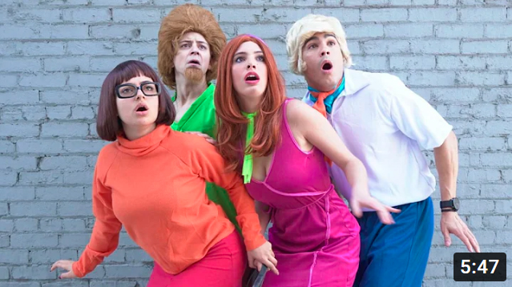

I never thought this would be possible with CSS
Kevin Powell
817K Subscriders
300k
Share
Clip
The pseudo-class is here, and while it’s often called the parent selector, it can actually do a lot more than that!

The Art Of War (Final Battle) | Battleship | All Action
All Action
4.2M views . 20 Jul 2022

Man City 2:1 Dortmund | UEFA Çempionlar...
CBC Sport
85.8K views . 10 day ago

Visual Studio Code 2022...
codeSTACKr
654K views . 27 Dec 2021
Build 15 JavaScript Projects...
freeCodeCamp.org
1.9M views . 9 Jun 2020

32 Legendary Goals in Football History
Alsido Football
3.3M views . 14 Jun 2022
